Weba-2008 à Fécamp

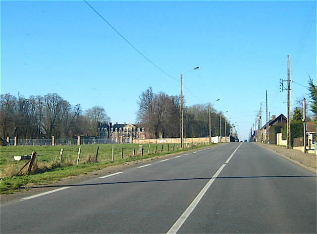
Cette année, le WEBA, le Week-End du Bout de l'An, organisé par Patrick Guilbert et Annick, se passe à Fécamp, avec un (gros) coup de main de Atout Vent ! Alors en route ! Je passe par Rouen et, dans la campagne, le château de Mussegros...

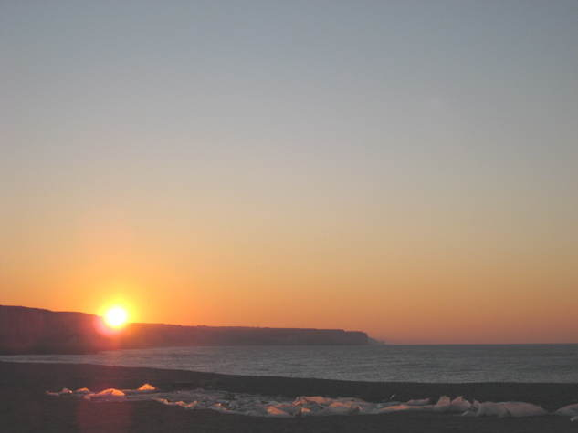
J'arrive vendredi vers 15 h, tout seul encore ! Grand beau temps, mais il fait frisquet ! Je replie vers 17h15, et le soleil fait de même sur les falaises

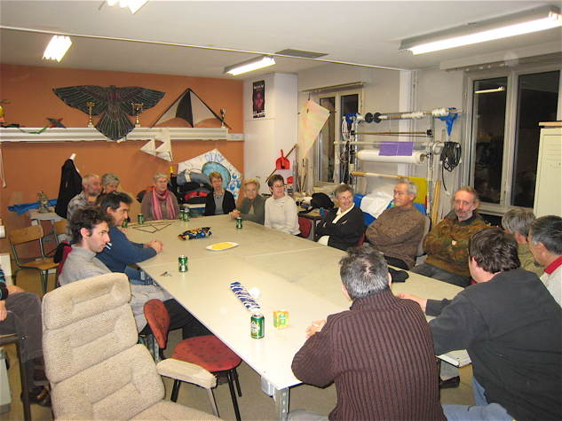
Les participants arrivent petit à petit, et se regroupent dans la salle-atelier du club, vaste et suréquipée en machines à coudre et autres... François, lui, ne connaît pas le rendez-vous et dormira dans sa Modus (rappel : il fait -5 la nuit !).

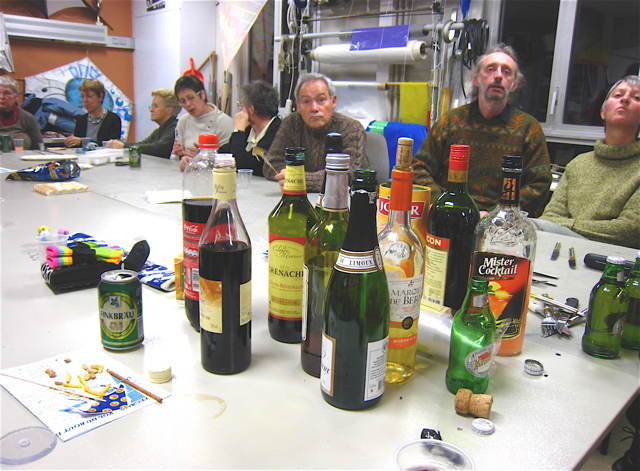
Il est bien tôt, on ne va pas rester à ne rien faire ! Bernard commence à fêter ses 50 balais et amène des rafraîchissements... abondants et de saison !

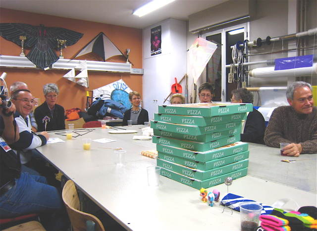
Ensuite, on commande des pizzas à l'Italien du coin, quand on a une grande salle comme ça, ce serait dommage de ne pas en profiter...

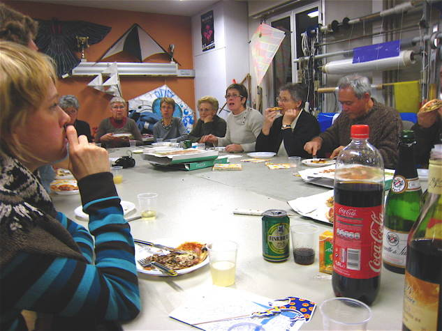
Il a fait froid, l'appétit est ouvert, et les pizzas, mangées avec les doigts ou à la fourchette, disparaissent rapidement !

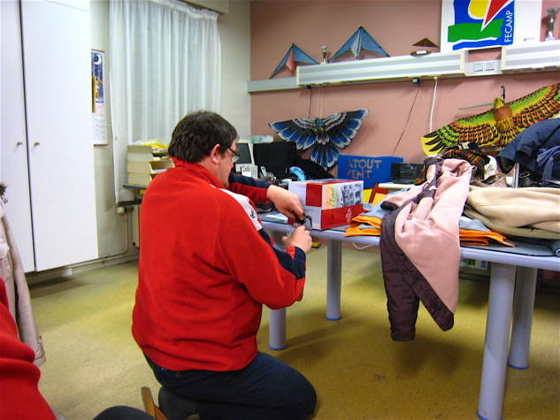
Le grand Thierry a également pensé à apporter un cubi de rosé pour accompagner les pizzas !

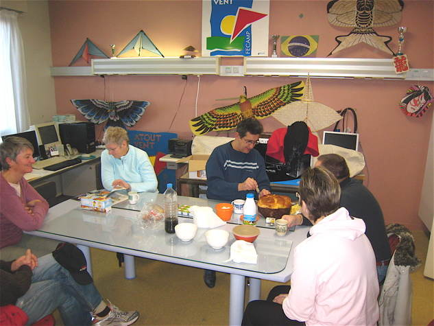
Je suis un peu grippé, alors je dors dans la salle bien chaude et silencieuse... Les camping-caristes se poseront dans la cour de l'hôpital désaffecté qui abrite la salle et diverses assocs. Au matin, je déjeune tranquillement, mais quelques camping-caristes viennent aussi profiter du confort des installations. Bernard a apporté un gros pannetone que tout le monde apprécie !

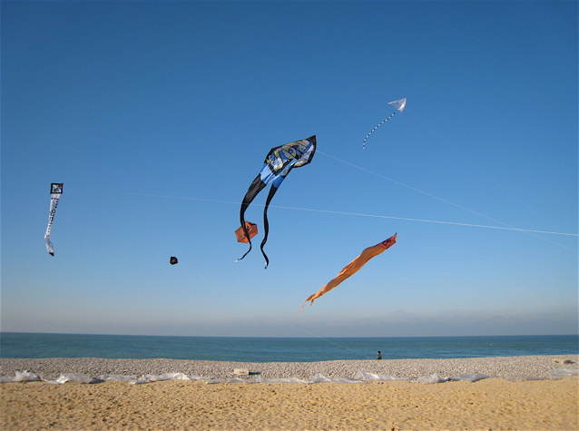
Direction la plage, de plus en plus de surface ensablée... Vol dans l'air froid et... on ne manque pas d'air, c'est sûr !

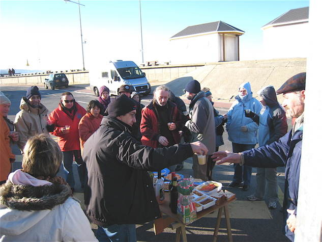
Bernard a un grand camping-car. Il a encore des provisions pour un pot presque repas ! Avec jambon, saumon, etc.

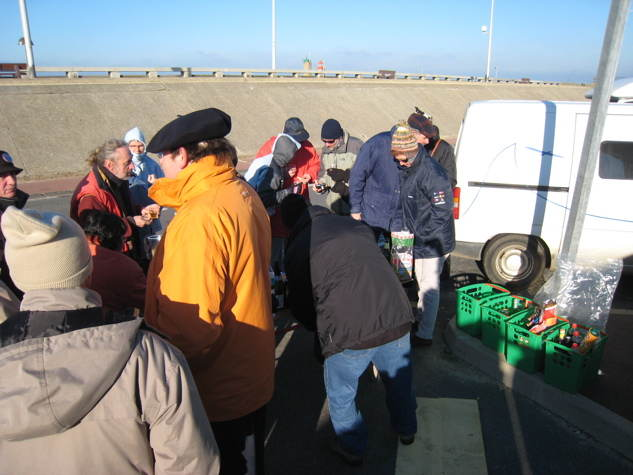
Mais Thierry se dresse (et ça se voit !) : Posez tout, tout le monde en l'air, FR3 a fini avec les baigneurs (d'autres fous...) et arrive ici !

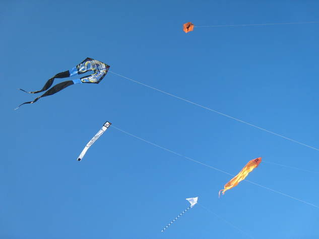
On remet tout en l'air pour renvoyer l'ascenseur ! Le vent est toujours solide...

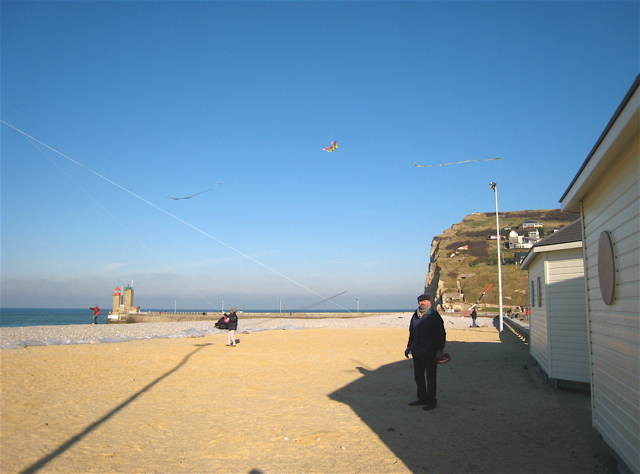
Arnold s'abrite du vent derrière les cabanes mais garde la tête au soleil !

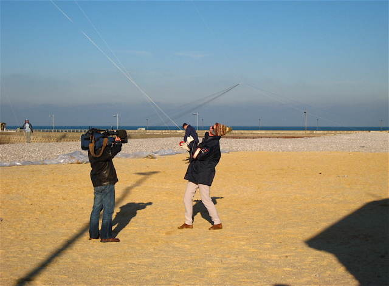
Le cadreur s'intéresse de près à Sylvie...

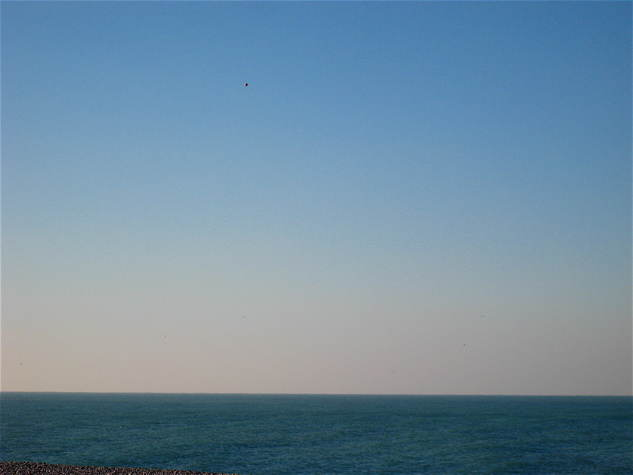
Joël a lancé un ballon. Après un incendie rapide du premier, celui-ci, après un allumage difficile et une figure de haute voltige, est monté sans dommage et on le perdra au loin... et il part très vite avec ce vent !

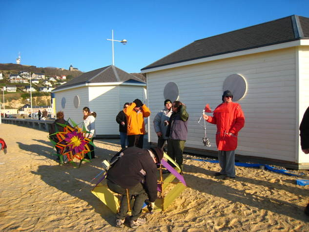
Pour la télé, tout le monde se rassemble avec son petit matériel !

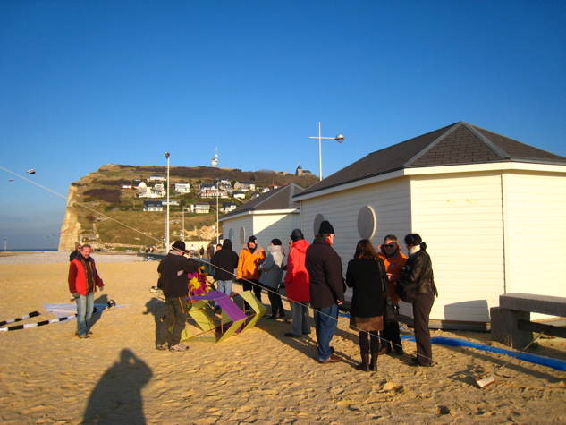
FR3 interviewe les participants pour pénétrer leurs mystérieuses motivations...

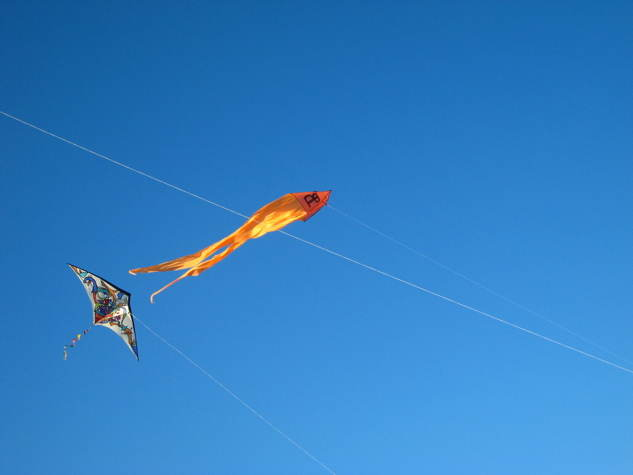
Mais les cerfs-volants volent toujours, il y aura du vent tout le week-end, et pas un nuage...

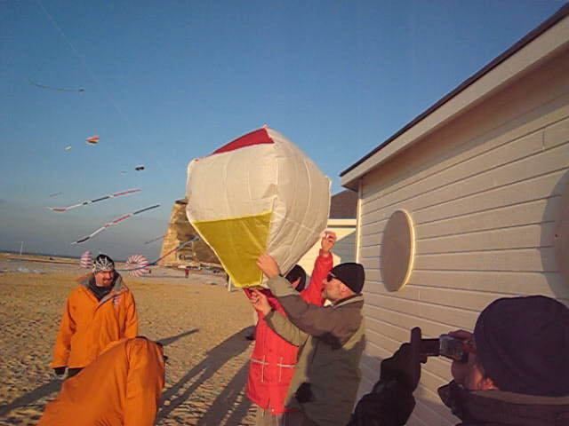
Marc lance aussi un ballon qui se gonfle à peu près correctement à l'abri de la cabane...

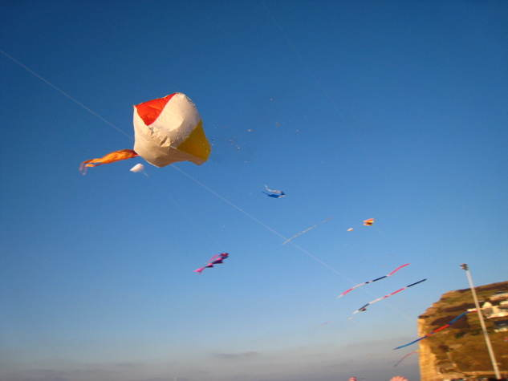
Mais au décollage, il effectue une volte oblique dans le tourbillon né de la baraque, et la flamme se communique à l'enveloppe qui a maintenant un trou normal (en bas) et un autre qui s'agrandit d'ailleurs rapidement (à droite)...

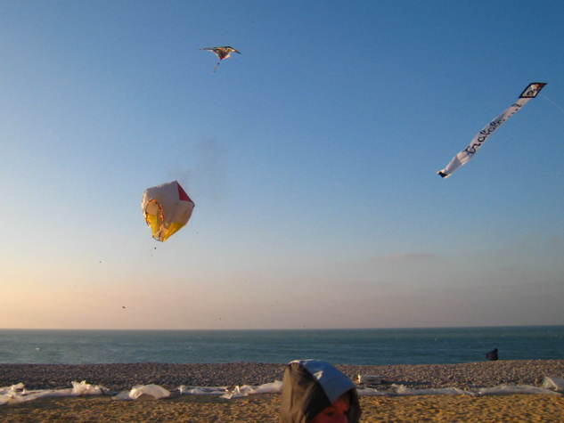
Il vit ses derniers instants, le trou fait maintenant toute la hauteur et ça brûle toujours...

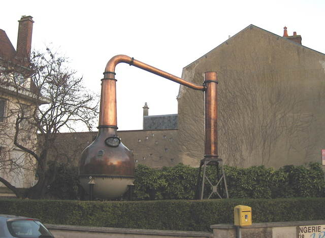
Vers 16h30, le soleil ne chauffe plus beaucoup ! Les volontaires (beaucoup) partent pour une visite du musée de la Bénédictine (avec dégustation, ça motive les hésitants) ! Devant le musée, un alambic qui a dû débiter des mégalitres...

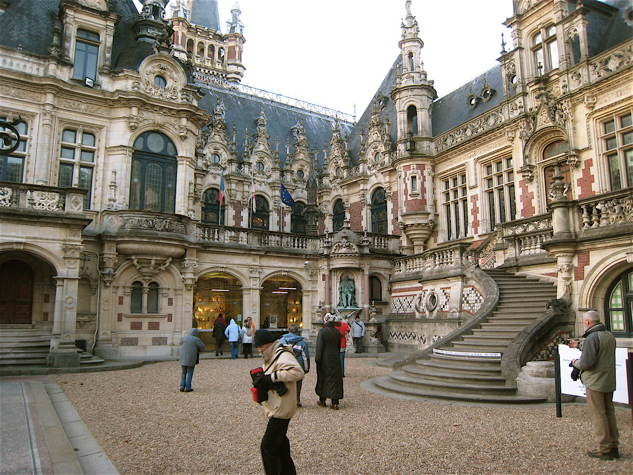
Le Musée a été bâti spécialement par... Alexandre Legrand (en un seul mot...) au nom prédestiné ! Il a repris la recette de l'élixir des moines de l'Abbaye, mais a ajouté de l'alcool pour en faire la liqueur (prudemment brevetée) qui lui a valu une immense fortune.

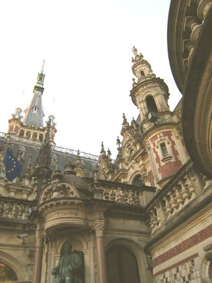
Le style du musée est très tarabiscoté pour ne pas dire plus...

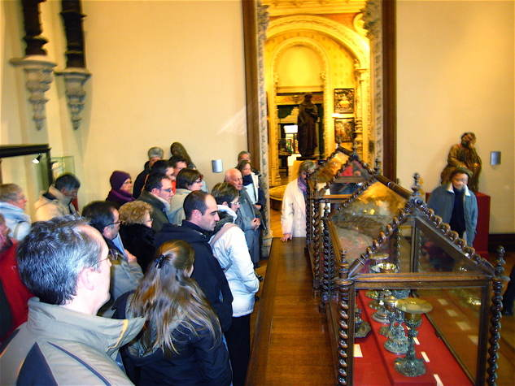
Le Palais abrite le musée et la partie usine où se fabrique toujours la Bénédictine ! On visite d'abord le musée, très orienté objets religieux.

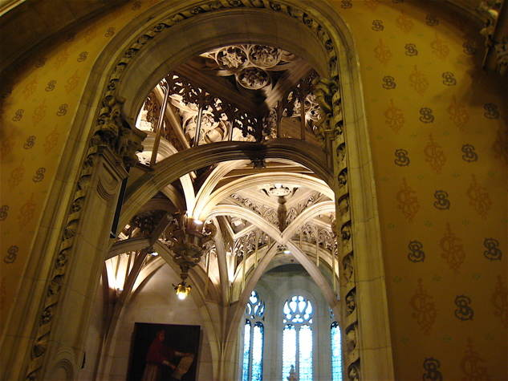
Le plafond de l'Oratoire est particulièrement exubérant !

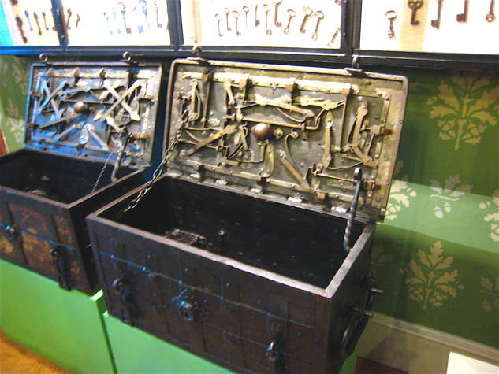
Beaucoup de serrurerie, aussi, comme ces coffres qui s'ouvrent avec une seule clé qui commande des pênes sur tout le pourtour !

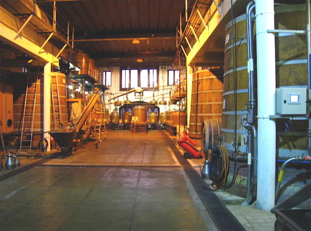
La salle des alambics où on distille les décoctions d'herbes et où des cuves permettent le réchauffage et le mijotage des solutions. Dommage, l'usine est fermée entre Noël et le Jour de l'An !

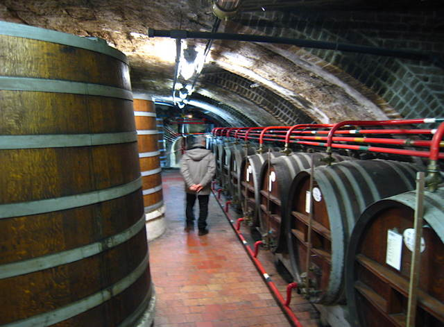
Dans les caves, les liqueurs reposent. La recette est complexe : on ajoute des trucs à l'alcool, on laisse macérer 6 mois, on rajoute d'autres trucs, on chauffe, on laisse reposer, etc. Il faut un énorme stockage, dans des fûts de bois !

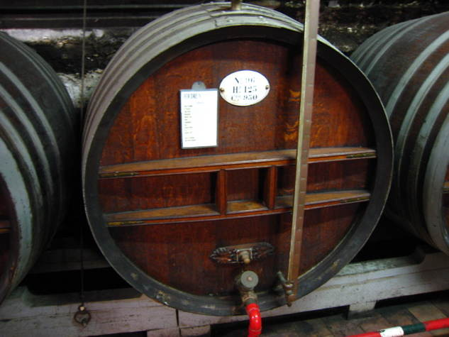
Chacune des petites cuves de côté fait... 950 litres !

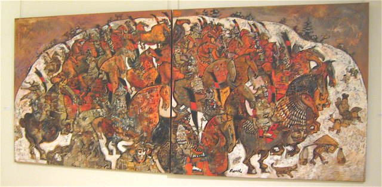
En parallèle à la dégustation, le musée abrite une exposition Ronel, peintre assez connu...

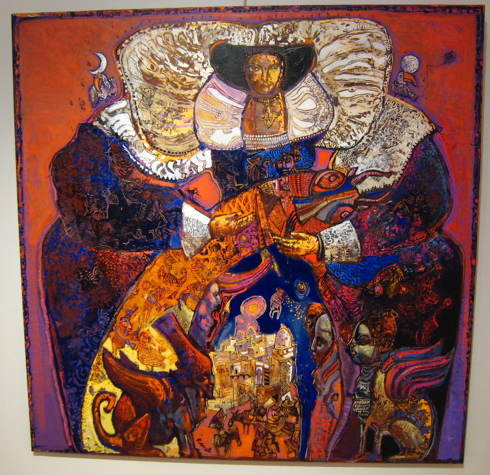
J'aime bien son style, et en particulier cette femme complexe !

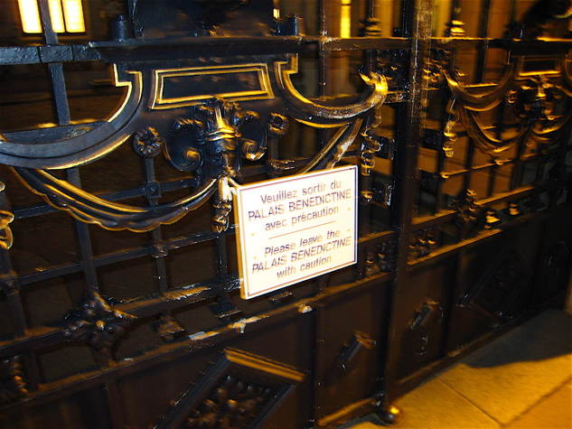
Après la dégustation (plus achat si affinités), on sort et une affiche rappelle les précautions nécessaires dans l'état où l'on est !

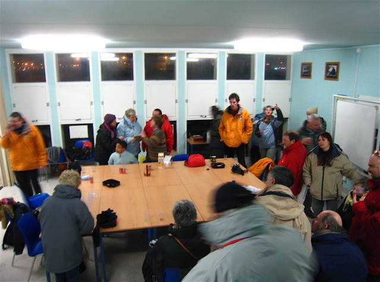
A la sortie, il fait froid et avant d'aller dîner, un vin chaud s'impose, et pas dehors ! L'école de voile nous héberge dans ses locaux, merci ! C'est Annick qui l'a préparé et à force de le faire bouillir, elle était encore... émue !

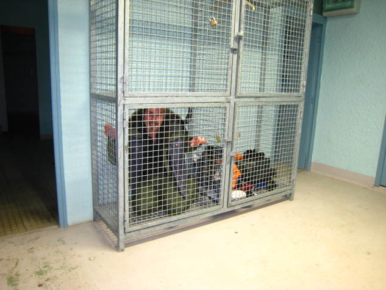
Dans un coin de la salle, une espèce de Yéti hirsute est enfermé dans une cage...

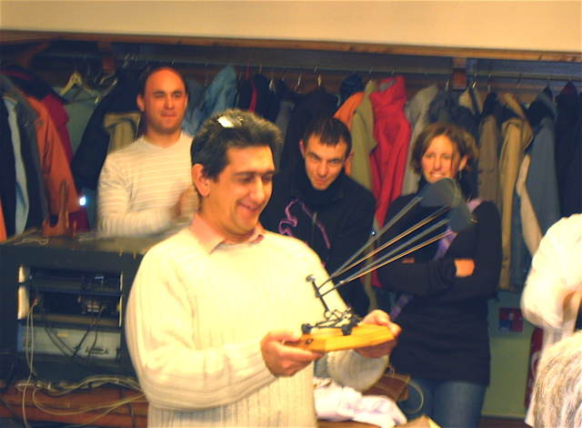
Au soir, on rejoint le Moulin Bleu pour le dîner. Bernard reçoit ses cadeaux ! D'abord un modèle de char à cerf-volant réalisé par Thierry...

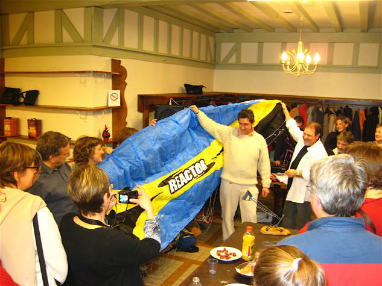
Puis une voile de traction de bonne facture pour s'éclater quand il voudra ! Il la testera dimanche matin...

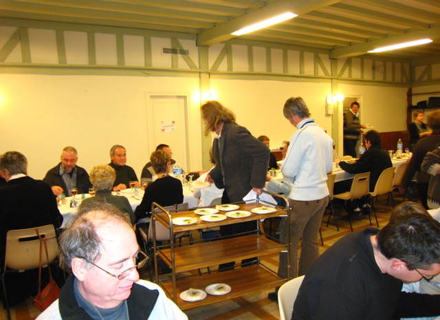
Au service, l'équipe mixte des Guilbert... Un grand merci à tous deux pour leur boulot avant, pendant (et après ?).

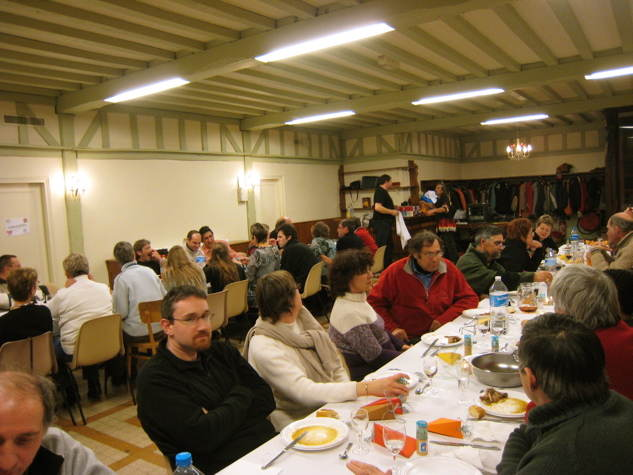
Outre de quoi se régaler, chacun reçoit un petit pot de crayons de couleur et 3 stylobilles ou apparentés !

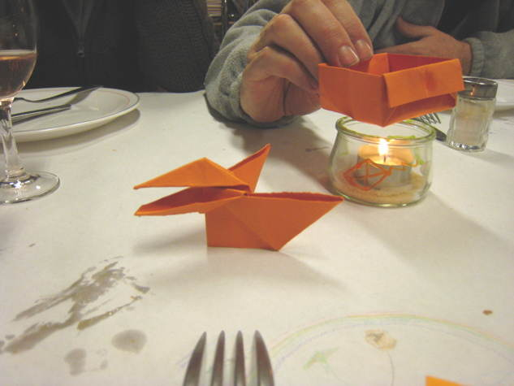
Minoli occupe les temps morts à réaliser des pliages (Origami au Japon, elle en est prof...) ! Elle a fait une petite bassine dans laquelle Christian fait bouillir de l'eau... et un volatile qui claque de son gros bec !

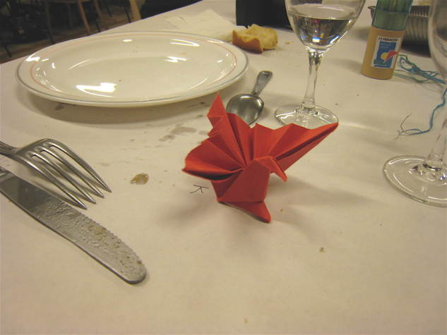
Elle réalise un magnifique paon en réduction, mais là, c'est coton !

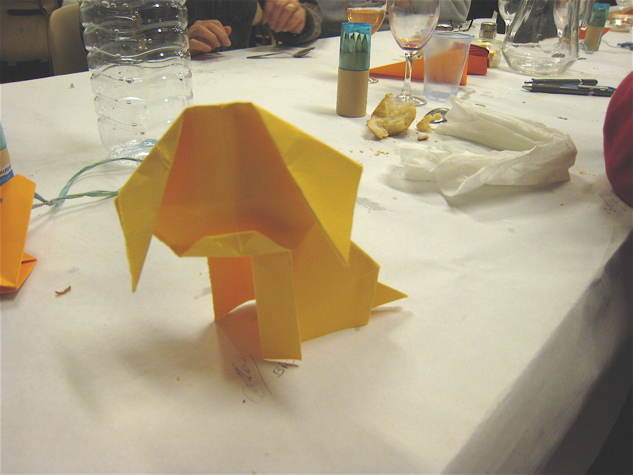
Par contre, le petit chien est assez facile. Il est en 2 morceaux : la tête et le corps ! A le regarder, on comprend pratiquement comment le réaliser

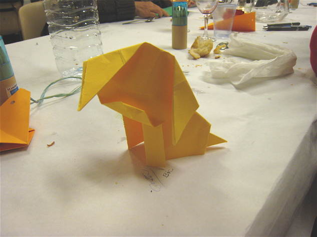
Et on peut modifier l'inclinaison de la tête ce qui lui donne un air coquin !

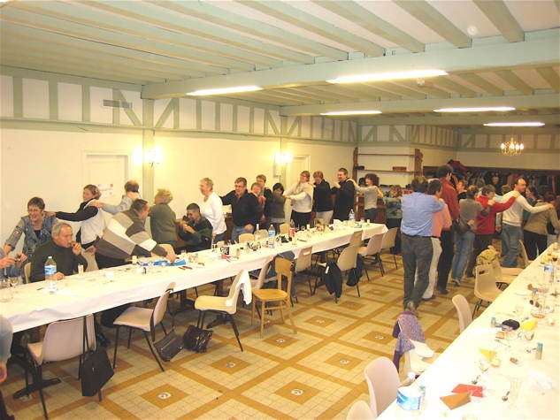
Après dîner, Gaston prend sa guitare et nous fera chanter des chansons de marin et assimilées (Fugain) que tout le monde (ou à peu près) reprend en choeur... Puis on danse, on farandole, il nous reste quelques calories à dépenser, et ça réchauffe !

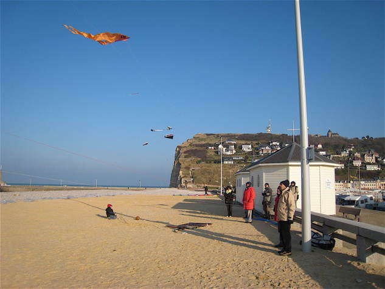
Après une bonne nuit (François a bien apprécié la salle...), petit-déjeuner au Moulin Bleu et vol ! Enfin, il y a quand même déjà quelques départs, mais les années précédentes, les départs commençaient le samedi...

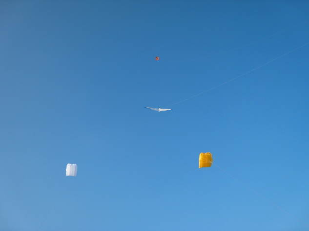
Je voulais faire voler une grue, mais la force du vent oblige l'Albatros à reprendre du service !

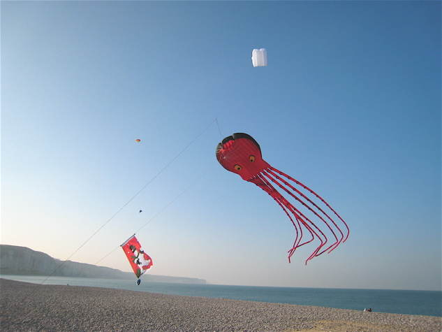
Claude Bova fait encore voler sa pieuvre sous un porteur blanc comme un petit nuage !

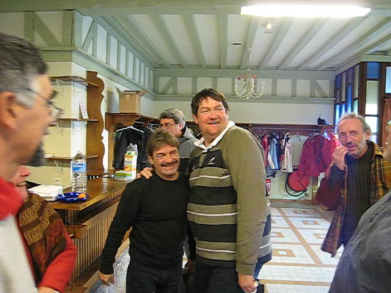
En fin de matinée, encore un déjeuner au Moulin Bleu (mais où s'arrêtera-t-on ?) ! Et puis pour presque tous ce sont les adieux, jusqu'à Newport début janvier ou Le Mans les 4-5 avril.
Weba : Un week-end de fête avec de plus en plus de monde, ça devient dur à organiser pour Patrick et Annick. Heureusement, avec Atout Vent, ça assure : aide, salle, organisation locale et ambiance, tout est à profusion, c'est trop, vivement un week-end d'une semaine !